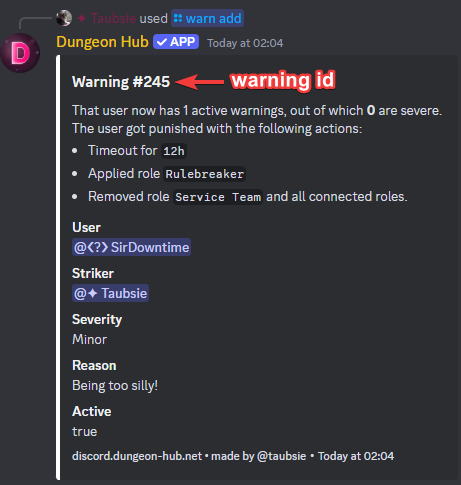

/warn add
Examples

Description
This command adds a warning to the given user. It also applies all available punishments to the user.
You can read more about managing warnings here.
Arguments
Name | Type | Description | Optional? | Additional |
|---|---|---|---|---|
| User | The user to warn. | ❌ No | |
| The severity of the warning. | ❌ No | ||
| String | The reason for the warning. | ✅ Yes |
|
27 December 2025